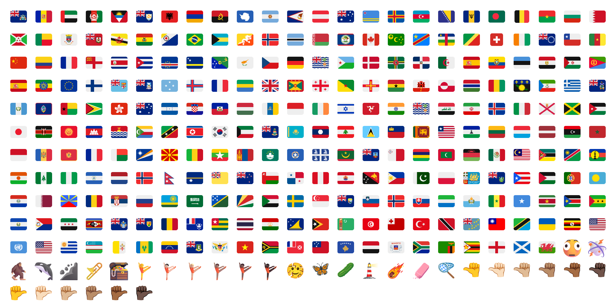
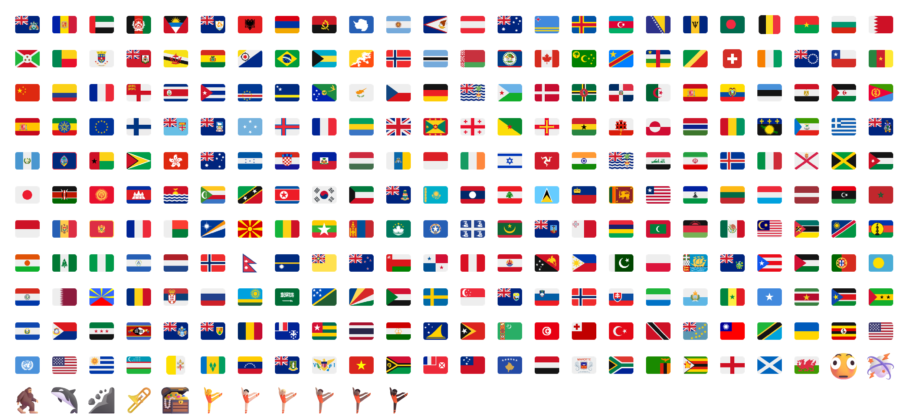
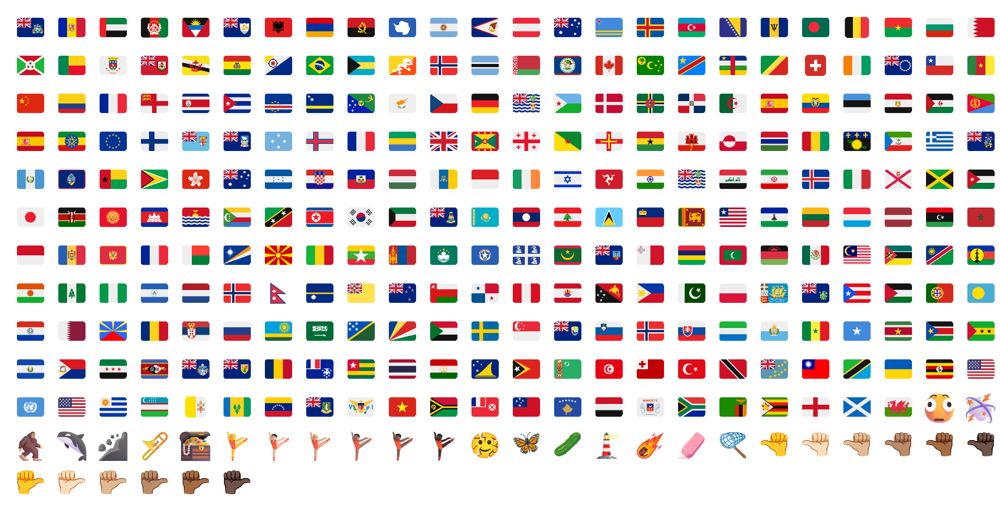
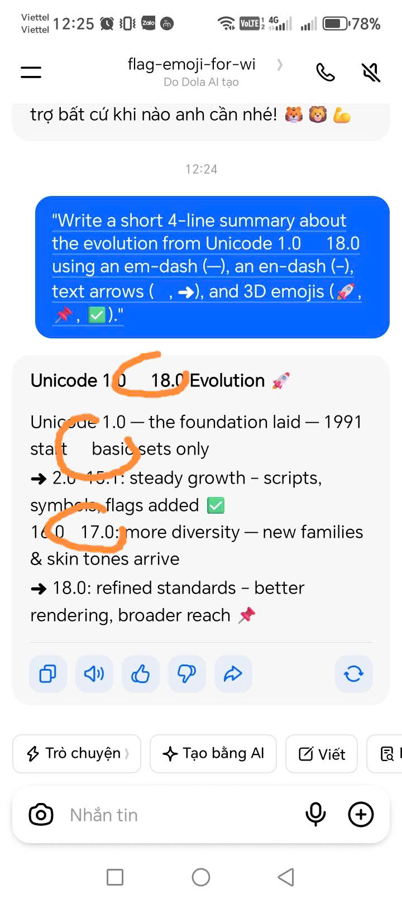
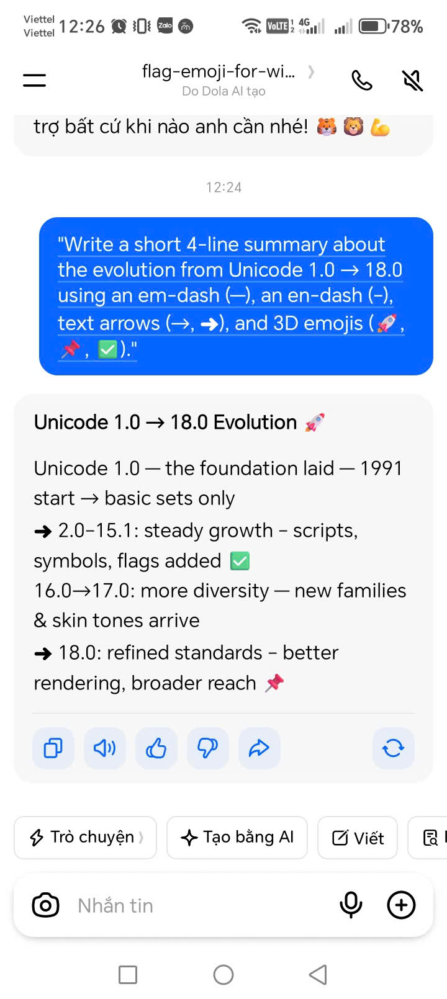
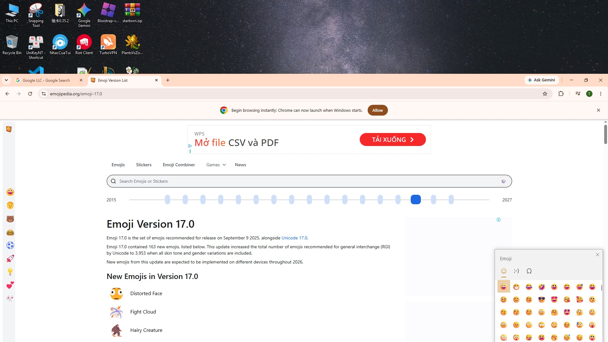

Built in 3 relentless days of binary font engineering and 40+ iterative builds across Windows 11 and Android Termux. Zero CPAL color loss, pure vector priority on PC, and native system fallback on MagicOS.

Instead of merging COLR+COLR and hitting the 65,536 CPAL color ceiling, we kept Windows 11's native COLRv1 untouched and engineered a clean CBDT shell (13.59 MB) strictly for the 262 missing flags and Unicode 18.0.
Harvested unused internal COLR component slots to fit 3,136 dynamic multi-skin-tone ZWJ sequences (HarfBuzz + Skia) plus Unicode 18.0—locking the font safely at 65,527 / 65,535 OpenType glyphs.
Moved packaging directly onto Android Termux for instant testing. By comparing against iOS .hwt themes, we discovered removing text arrows & dashes from cmap triggers Android's native system fallback cleanly.
| Edition | Target Platform | Size | Technical Architecture |
|---|---|---|---|
| Win11 Pure Hybrid | Windows 11 PC | 13.59 MB | 100% native COLRv1 vectors for Win11 emojis/ZWJ + CBDT for 262 flags & Unicode 18.0 |
| Win10 / Full Hybrid | Windows 10 & Legacy Apps | 40.94 MB | Full COLRv1 + 7,079 crisp 109px 3D bitmaps (3,136 ZWJ families + 262 flags + U18.0) |
| Ultra HD 8-Strike | 2K/4K Displays (Apple-Style) | 20 → 192px | Pure bitmap 3D across 8 resolutions (20, 32, 40, 48, 64, 96, 160, 192 px), zero COLR |
| Honor / Huawei .hwt | MagicOS / EMUI (Android) | 31.94 MB | 7,079 3D bitmaps + 342 VS16 Format 14 + 6,144 GSUB rules + Native System Fallback |





python colr2cbdt_3d_skia.py seguiemj.ttf seguiemj_pc_base.ttf --pc-hybrid python add_emoji_smart_cbdt_pro.py seguiemj_pc_base.ttf NotoColorEmoji.ttf Twemoji.Mozilla_cbdt.ttf seguiemj_win11_hybrid.ttf
python colr2cbdt_3d_skia.py seguiemj.ttf seguiemj_3d_pro.ttf python add_emoji_smart_cbdt_pro.py seguiemj_3d_pro.ttf NotoColorEmoji.ttf Twemoji.Mozilla_cbdt.ttf seguiemj_3d_pro_final.ttf python merge_emoji_into_honor_font_pro.py template.hwt seguiemj_3d_pro_final.ttf Win11_3D_Honor.hwt